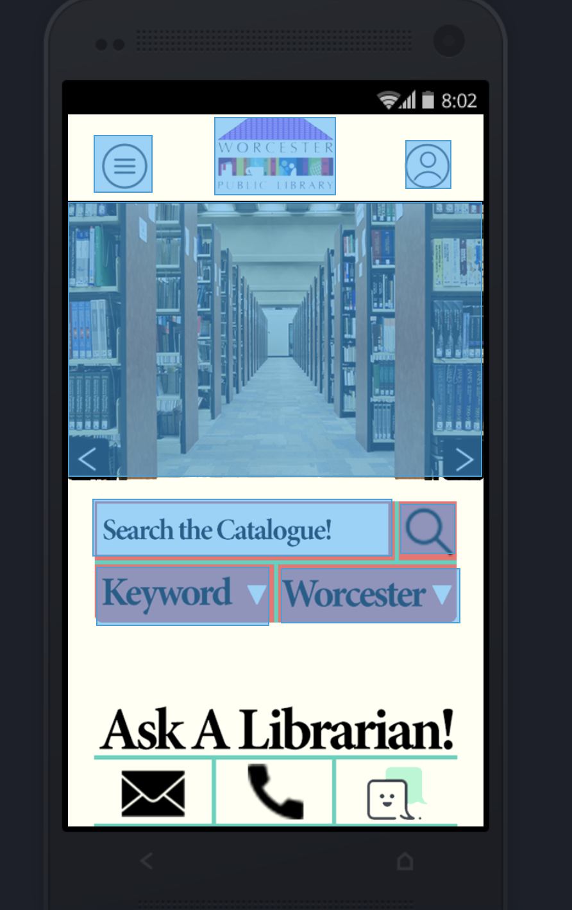
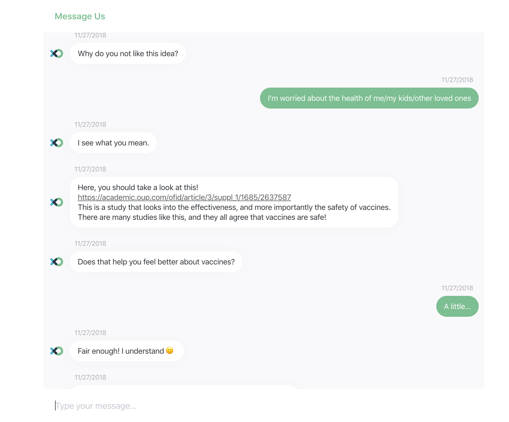
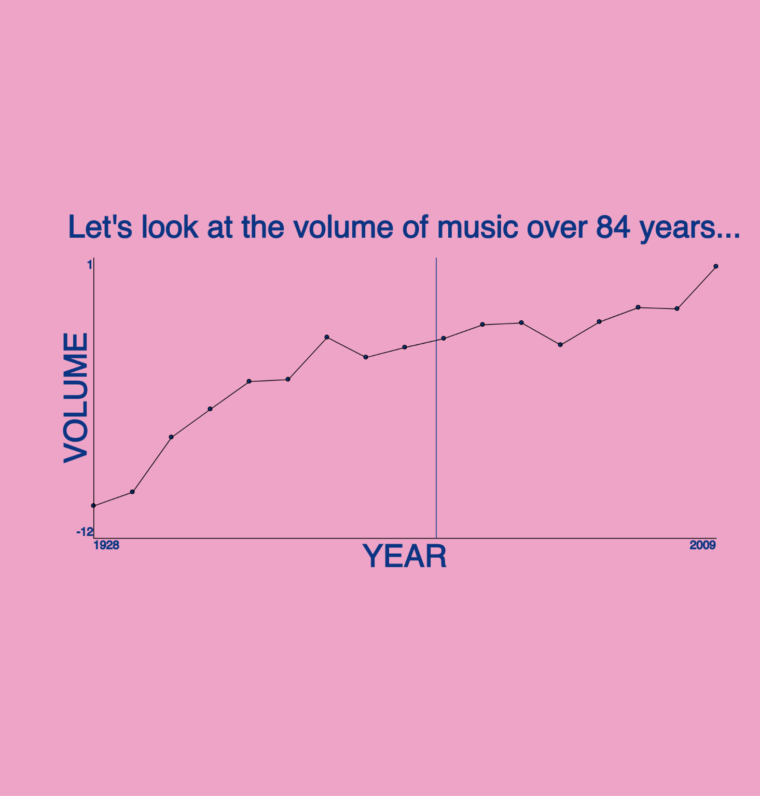
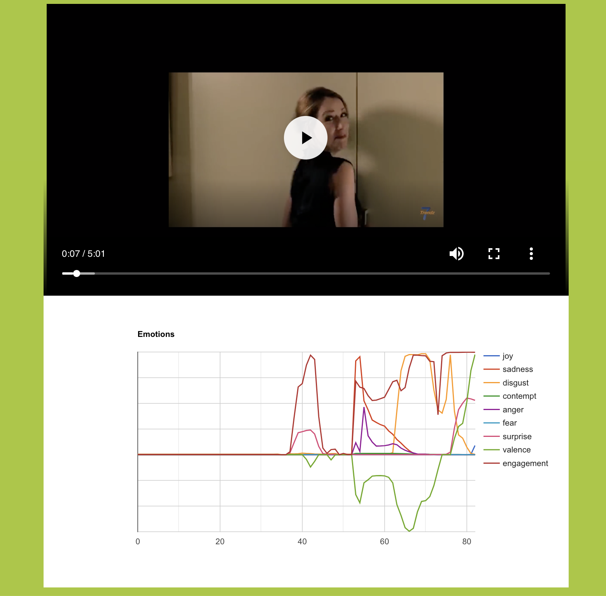
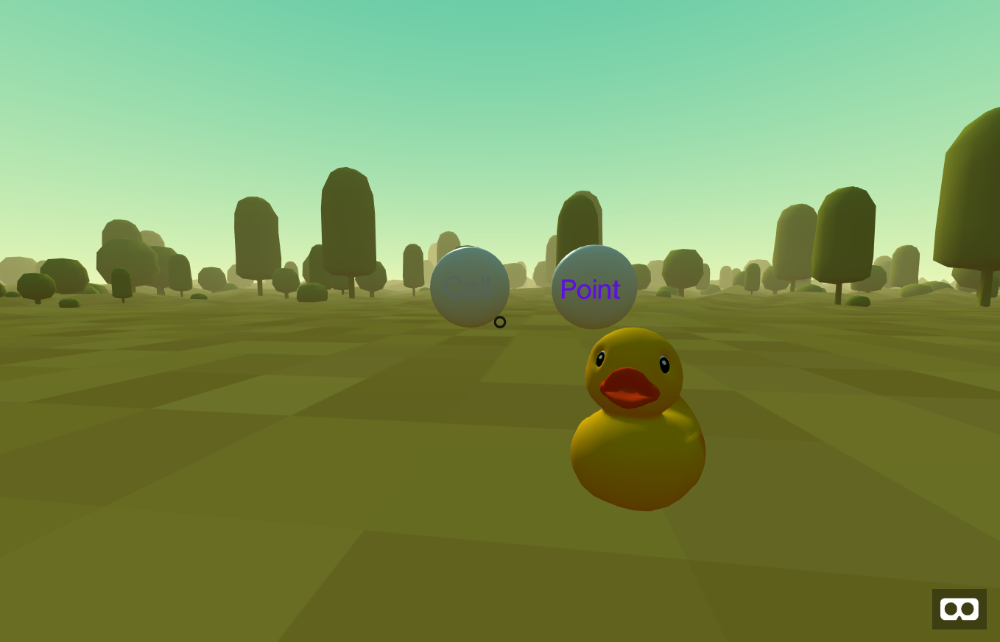

HCI Design portfolio
About Me!

Hello! My name is Matt Puentes. I'm a Computer Science Student at WPI, and I'm a proud member of the CyberCorps SFS program.
This page was made to show off the portfolio of projects I created throughout the duration of WPI's Human-Computer Interaction course. I'm quite proud of what I've done, and I'd love it if you took a look!
At the end of the term, we compiled all of the lessons we learned into one final paper, called our "Design Manifesto". If that's what you're here to see, follow this link!
Project 1: Design for Others
This project involved the re-design of the Worcester Public Library website for a certain demographic. We were assigned "retirees who are amateur metalworkers", and tried to make the website more readable for an elderly audience.
More details can be found in The Final report Here
Project 3: Design for Tension
In this project, we were expected to discuss a tense topic with a user through the medium of a chatbot. In order to do this, we mapped out a full conversation tree and tried to use a positive tone as much as possible to sway the user to our side. Our chosen topic was that of vaccines and whether or not they are harmful.
More details can be found in The Final report Here
Project 2: Design for Understanding
This project was designed to communicate an understanding to the end user through the use of graphing and design. The project had two sides to it: "Clear communication" and "Persuasive communication". As the team member responsible for the latter of the two, I used this dataset and a mixture of informative visuals and annoying audio to try and convince users that music had become "too loud".
More details can be found in The Final report Here
Project 4: Design for Wellbeing
This project had us using the affectiva library in order to read the user's emotions. The goal was to somehow use this data to improve the wellbeing of the user somehow. The way my group settled on was to use the emotion tracking capabilities to track and graph a User's reaction to certain advertisements. We reasoned that it would benifit the user by letting companies serve up better advertisements that gave way to more positive emotions.
More details can be found in The Final report Here
Project 5: Design for Another World
This final project had us building 3D enviroments using A-Frame, a web-based solution to 3D enviroments, allowing users to define them using just HTML. Our group decided to make a VR pet in that the user could interact with. The final product involved several different animations the pet could perform, as well as several ways the user could interact with the pet.
More details can be found in The Final report Here